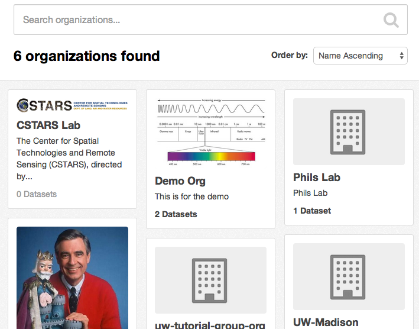
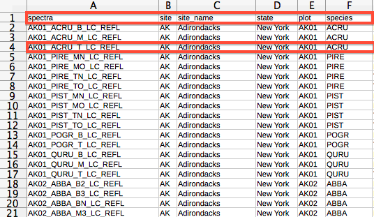
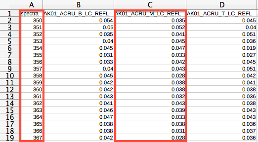
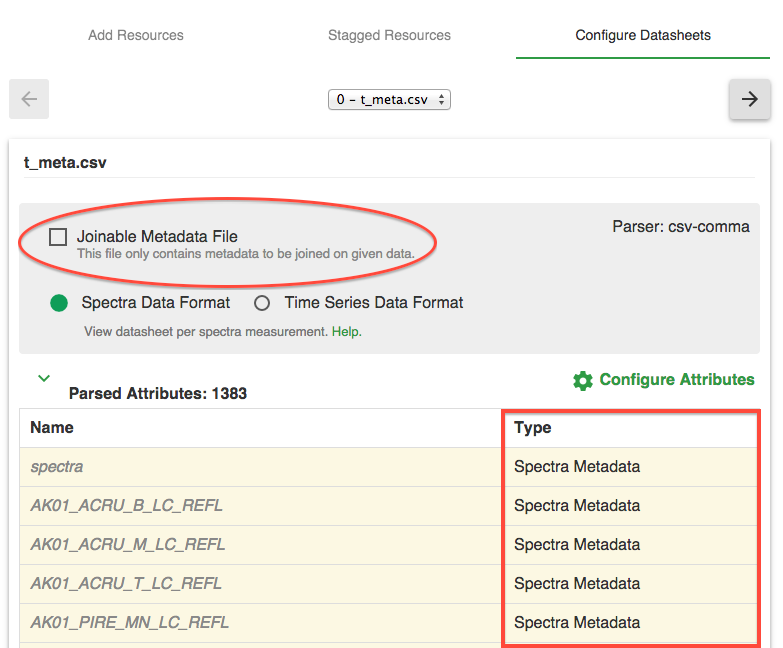
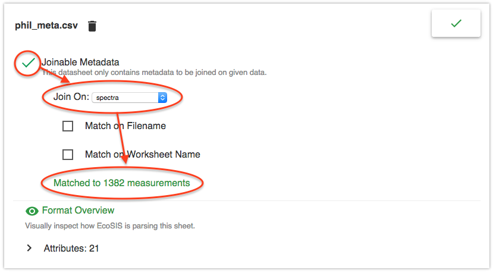
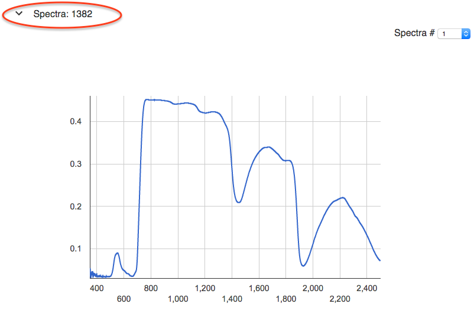
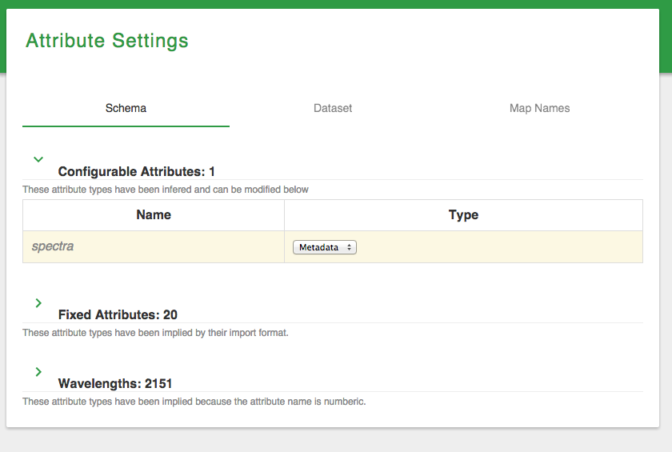
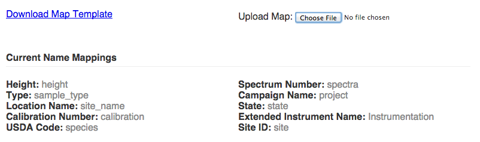
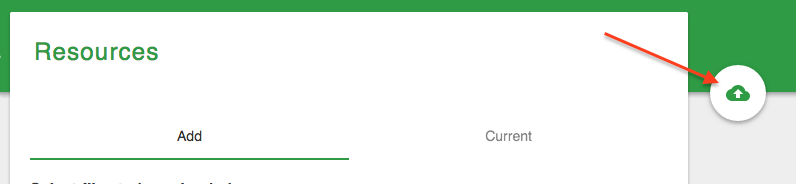
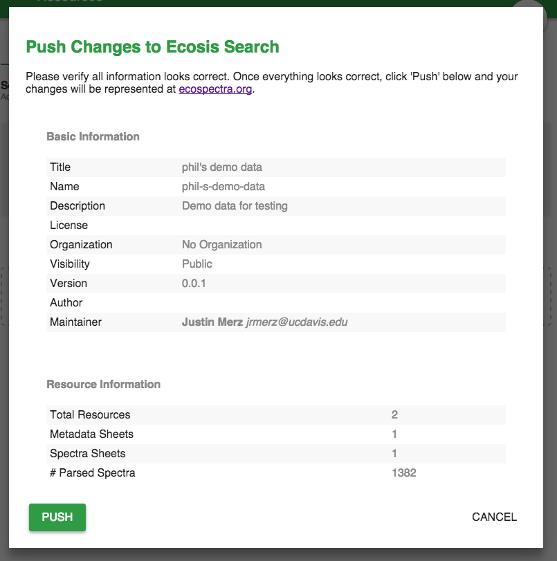

EcoSIS Tutorial
Step by step tutorial for adding datasets to EcoSIS
Presented by Phil Townsend / ptownsend@wisc.edu
Created by Justin Merz / jrmerz@ucdavis.edu
Heads Up
reveal.js is a framework for easily creating beautiful presentations using HTML (including this one). You'll need a modern browser with support for CSS 3D transforms to see it in its full glory.
Create EcoSIS Account
First your will need to create an account at data.ecospectra.org


Login
Make sure you are logged in before proceeding


Create Organization
Now we are going to create an organization for you or your lab.
 Now give your organization a name, description and (optionally) set a logo.
Now give your organization a name, description and (optionally) set a logo.

Add a Dataset
Navigate to your newly created organization by clicking the 'Organizations' tab, then click your organziations card. You can also search for your organization by name. Finally, click '+ Add Dataset' to start the EcoSIS dataset editor.
Click your organization
Click add '+ Add Dataset'

Basic Information
In the dataset editor fill out the preliminary data for your dataset including name, description, license (if any) and visibility flag. Make sure your description gives people a brief overview of what this dataset is.
Then click 'New Resources' on the left hand navigation. The menu item will show once you have given the dataset a valid title.
Data Formats
EcoSIS utilizes user-defined schema and recommends names for certain metadata attributes. EcoSIS uses the format of *your* files, with some guidance, to figure out your dataset's scheme.
EcoSIS expects data to be uploaded with each measurement either:
- In a single row - where the first column is your attribute name and the proceeding columns are the data values, including spectra
- In a single column - where the first row is your attribute name and the proceeding rows are data values, including
|
 By Row |
 By Column |
Note: wavelengths are still considered to be an attribute name.
You can add additional/optional formatting to your files to specify type (data vs metadata) if you are providing both in the same file. You can also specify global metadata for a file.
- Adding the row break between the two bottom tables helps define your schema by telling the importer your attribute types. The middle table will be set as type 'metadata' while the bottom table as type 'data'. If you don't use the break you will be given a chance to manually define attributes after the file has been added.
- At the top of a file columns A and B can be used to define global metadata for the file with Column A being the attribute name and Column B being the attribute value.
This is confusing. Maybe this: Finally, regardless of table format, only assign numeric attribute names to wavelengths. Data following any attribute name that is numeric will always be considered spectral data.

Add Resource Files
Select which format your files will be provided in. Spectral (by column) where your wavelengths are provided in Column A or Time Series (by row) where your attribute names are provided in row 1. Then select the files you wish to upload by clicking the file selector next to 'Select File' or by dragging and dropping the files over the 'Drop files here' box.
Sample spectra and metadata files can be downloaded by clicking here and here (recommended).
Configure Datasheets
After the files have finished parsing you will be redirected to the 'Configure Datasheets' tab in the 'New Resources' page. Here you can see how the importer interpreted your files.
It's very important to look over your files and make sure everything is correct. Pay special attention to joinable metadata files as you will always need to mark these files and define how the metadata is to be joined with the rest of your data.
Configure Joinable Metadata
For metadata sheets, click the 'Joinable Metadata File' checkbox.
|
 Before configuration |
 After configuration |
- Attribute Name: Using 'Join On' select the attribute that should be used as a unique id to join the metadata with the data.
- Filename: If you have one spectrum per file you can match the selected attribute to a filename. The 'exact match' option lets specify if the filename should be loosely matched or exactly matched to the attribute value.
- Sheetname: Similar to filename, but lets you match the selected attribute to a sheetname inside a excel file.
Inspect your datasheets to make sure they have been interpreted correctly. You can click the 'Configure Attributes' button or 'Attribute Settings' on the left hand navigation to configure your datasets schema if any of your attribute types are incorrect.
Attribute Settings / Dataset Schema
Now we want to make sure the schema for our dataset is correct as well as define special attributes for this dataset.
Schema
In the schema section you can modify any attribute whose type is not implied by the import file format. You can also view what attribute types are fixed by their import format and why.

Dataset
In the dataset section you can specify special attributes that further describe your dataset.
- Order. If your dataset has ordering (ex: the dataset is a time series) you can specify an attribute to order by. You can also specify how to parse the 'order by' attribute (string, number or date).
- Group. If you would like to split up your dataset into several groups for searching purposes, you can provide a 'group by' attribute.
- Location. If you would like to specify a geographic location for your dataset, you can set a location attribute. The location attribute should be GeoJson in EPSG: 4326.

Map Names
Since the dataset schema is defined by the user, there are no restrictions on the names of the attributes in your dataset. That said, it's strongly encouraged that you use the EcoSIS standard names. If you would like you can provide a mapping of your attribute names to the EcoSIS name. This way your data does not have to be directly modified but EcoSIS still understands your attributes. To do this, you download the mapping (text) file, then upload for your dataset. Note: this file can be reused for each one of your datasets. 
Inspect Dataset
So far you have provided EcoSIS with file format information as well as supplemental schema information for your dataset. Now it's time to make sure the importer has correctly understood you. Using the 'Inspect' menu item in the left navigation you can inspect and veryify your spectral data.

Click the arrow next to 'Metadata' to inspect.
Here you can inspect the attribute types as well as values.

Note: Non-standard ecosis attribute names are in italic while mapped attribute names show both the standard name as well as the non-standard name.
Upload Resources
We are now ready to upload our data. Click the 'check' button on the right hand side to give the dataset one final review before upload.
Review your upload the click 'Finalize' to start the upload process or 'Cancel' to go back and make edits.
Done :)
You will be redirect to your datasets landing page on the main EcoSIS site.